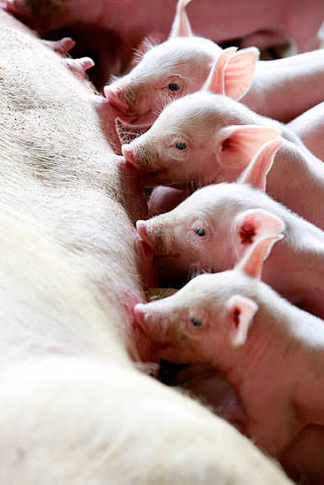
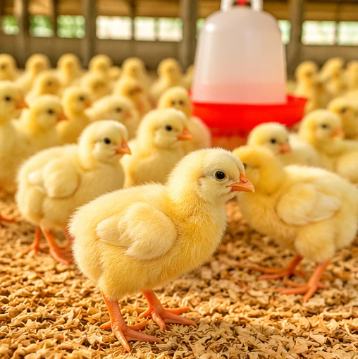
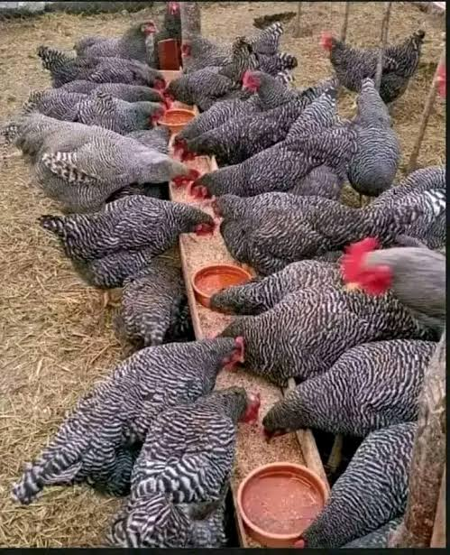
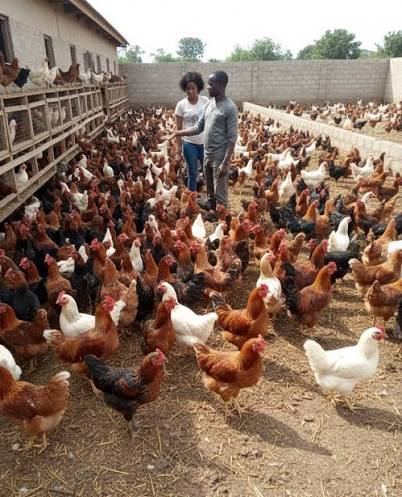
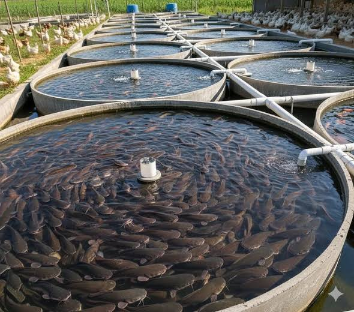
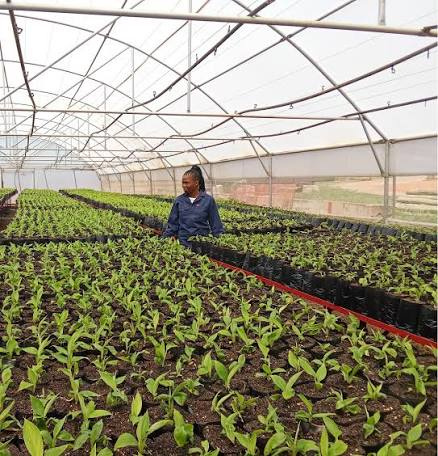

Your participation
—
Enrolled Projects
Your whole-farm picture: enrolled enterprises, recorded livestock, farm costs and the outlook ahead.
Enrolled Projects
Current Livestock
Recorded Farm Costs
Available Cost Projections
Your currently enrolled enterprises
Your enrolled enterprises will appear here.
Latest connected production and cost entries
Recent records will appear here.
Counts are derived from connected project records. Unconnected enterprises are identified rather than estimated.
Inventory totals include only records connected to this dashboard.
Get started with your farm management.
Manage your enrolled agricultural enterprises and monitor their progress.
Your project list will appear here.
Choose the agricultural enterprises you want to establish or manage. You can enroll in multiple enterprises.
Each enterprise is managed independently. You can enroll in Broiler, Croiler, Layer, Piggery, Fish, Crop or Dairy Farming. Each enrollment has its own management records and performance information.

Manage pig production, feeding, breeding, growth, expenses and sales.

Manage meat-producing chickens from placement to market.

Manage dual-purpose chickens for meat and egg production.

Manage laying flocks, egg production, feed consumption and egg sales.

Monitor fish stocking, feeding, pond management, growth and harvesting.

Plan crop production, monitor field activities, expenses and harvests.

Track dairy animals, milk production, feeding, veterinary expenses and sales.
Review livestock inventory and financial performance using recorded farm data.
Live animals and birds by connected enterprise
Connected livestock records will appear here.
Recorded farm costs by operating category
Connected expense records will appear here.
Estimate future farm spending from your recorded daily costs, then test how a change in spending affects the farm.
Forecasts start with recorded feed use, labour and other operating expenses. They are straight-line spending projections, not future market-price predictions.
Share of recent recorded operating costs by category.
Current recorded daily run-rate multiplied by each forecast period.
| Period | Feed | Labour | Other costs | Total expected spend |
|---|---|---|---|---|
| Waiting for connected cost records… | ||||
Long-range projections assume the current daily spend remains constant. They do not automatically add inflation, seasonality, future price changes or changes in farm size.
Enter an increase or reduction in daily spend. These adjustments are simulated only and will not change your saved transactions.
| Period | Current baseline | Simulated spend | Difference |
|---|---|---|---|
| Enter an adjustment to compare scenarios. | |||
The baseline uses recorded costs from the connected enterprise records. Daily costs are calculated from the last 30 calendar days. If no recent transactions exist for a category, that category is marked as having no recent records. A projection is only as reliable as the completeness of your daily records.
Manage your personal information and farmer account details.
Add a picture to personalise your farmer account.
Not available
Not available
Not available
Not available
Farmer